Seaborn charts for the ORCA B12 workflow
This folder contains static Seaborn charts rendered from the current CSV outputs in results/.
Open any PNG directly or use this gallery as the entry point.
xTB Landscape
All screened xTB structures split by multiplicity and seed distance.
Open image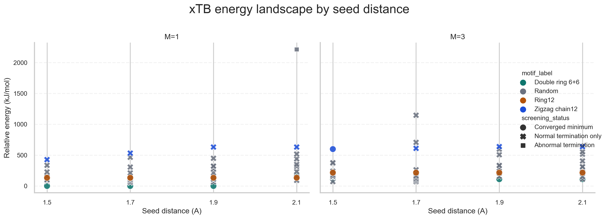
Unique xTB Minima
The unique xTB minima promoted to the DFT stage.
Open image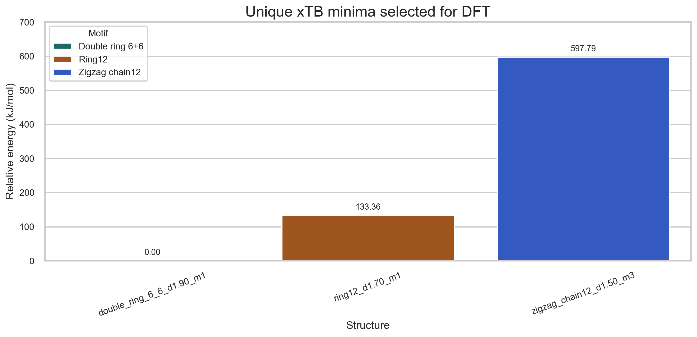
Pipeline Summary
Compression of the workflow from seeds to validated minima.
Open image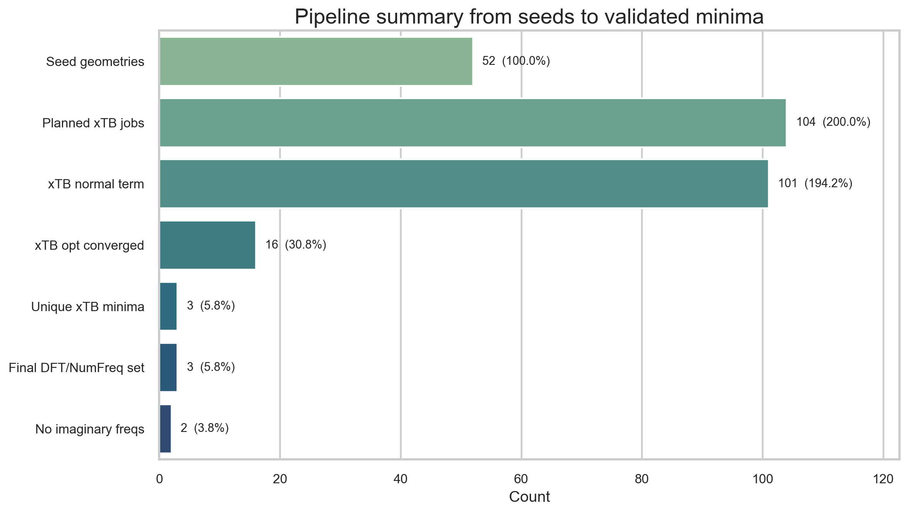
Final Ranking
Final relative energies after DFT + NumFreq.
Open image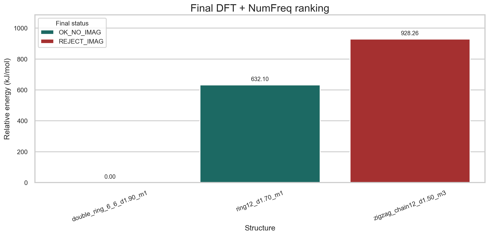
Frequency Diagnostics
Minimum frequency versus relative energy for final structures.
Open image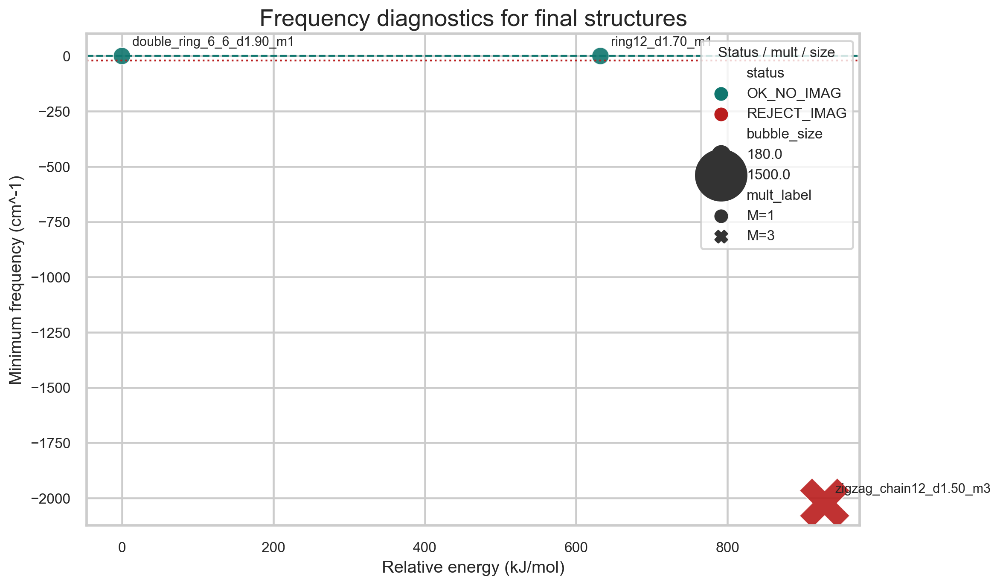
xTB Status Heatmap
How each motif family behaved during xTB screening.
Open image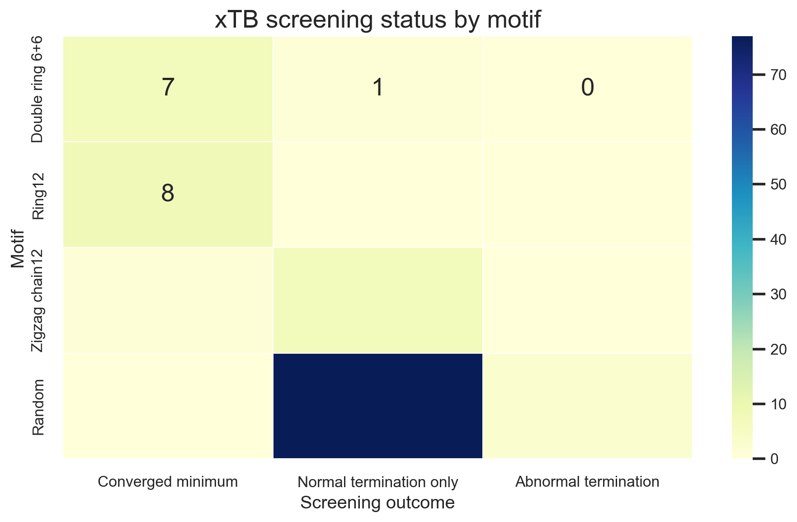
Diploma Funnel
The key funnel for the thesis: from xTB jobs to validated minima.
Open image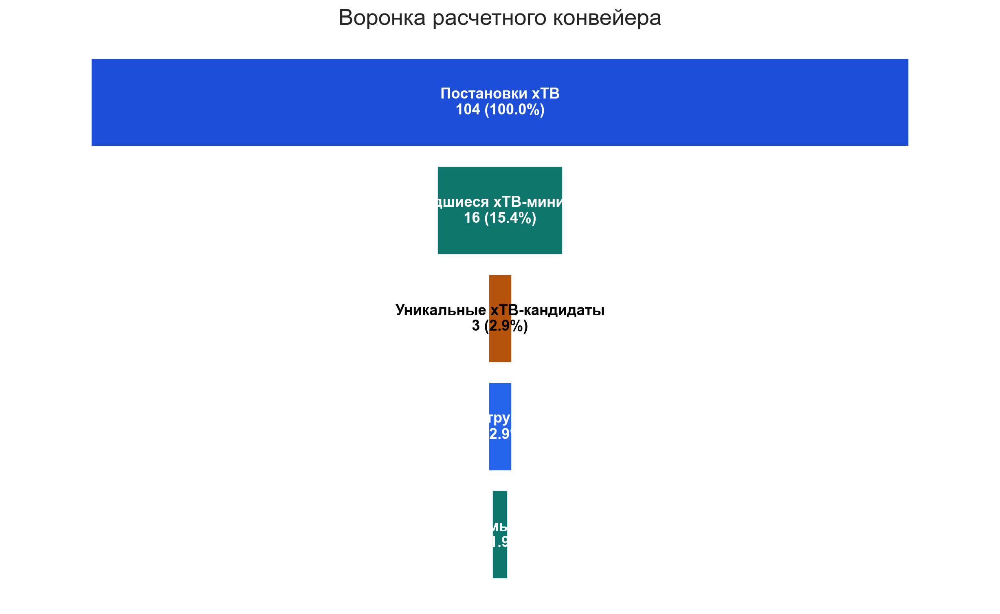
xTB Energy Distribution
Energy spread across all converged xTB calculations.
Open image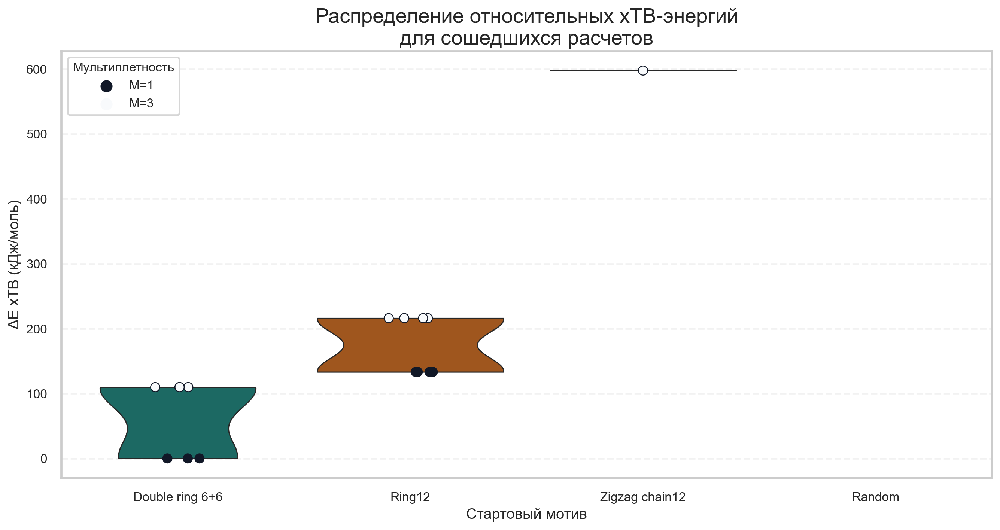
Final DFT Relative Energies
A simple bar chart of the final DFT candidates.
Open image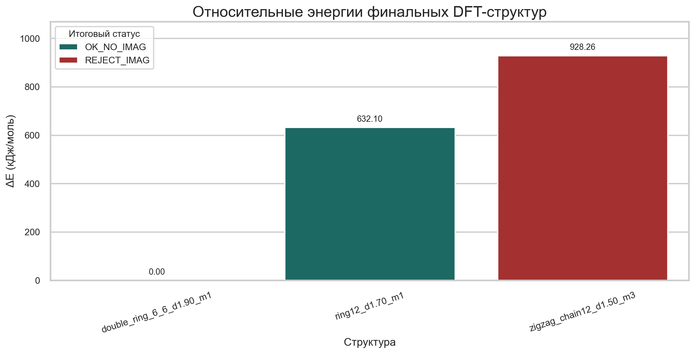
Final Minimum Frequencies
Minimum vibrational frequency for each final candidate.
Open image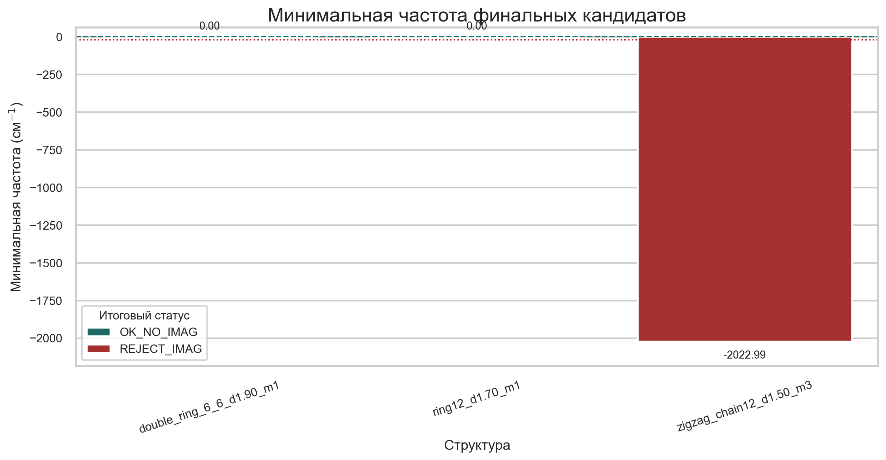
Start Distance Heatmap
Which motifs and seed distances most often converged at the xTB stage.
Open image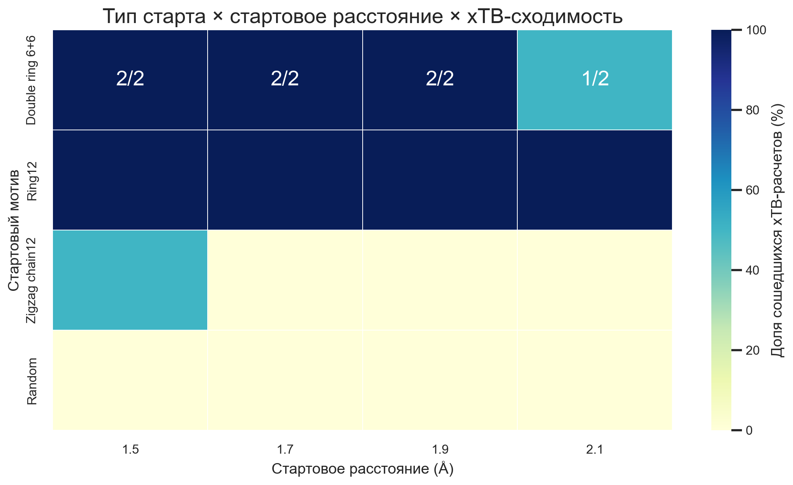
Final Geometry Triptych
Side-by-side view of the three final B12 geometries.
Open image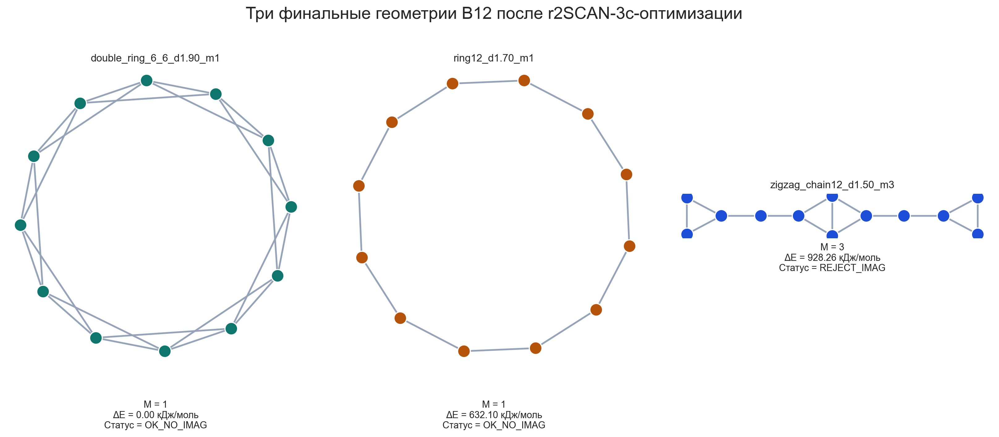